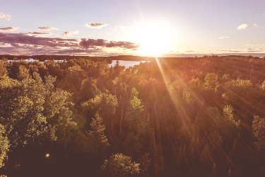
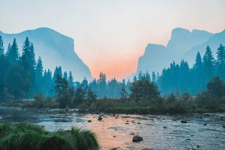
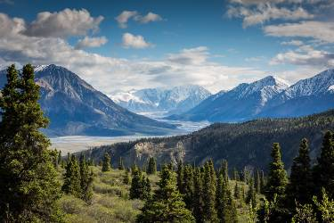
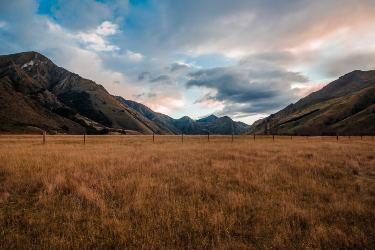
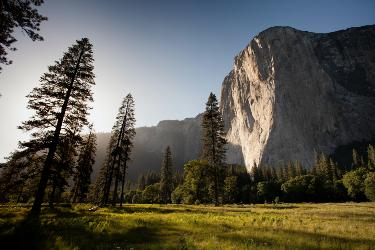
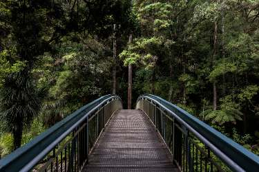

🥞 Saturday = Preston Pancakes in the Park! 9:00 a.m. Saturday at the city park pavilion.
Weather Tree
The info you need for the day!
Gallery

Sunset on Preston Mountains

Lakes in Fish Haven

Mountains in Soda Springs

Fields in PrestonFlowers near Fish Haven MountainSoda Springs Lake

Camping Spots in Preston

Bridge in MountainFall in Mountain